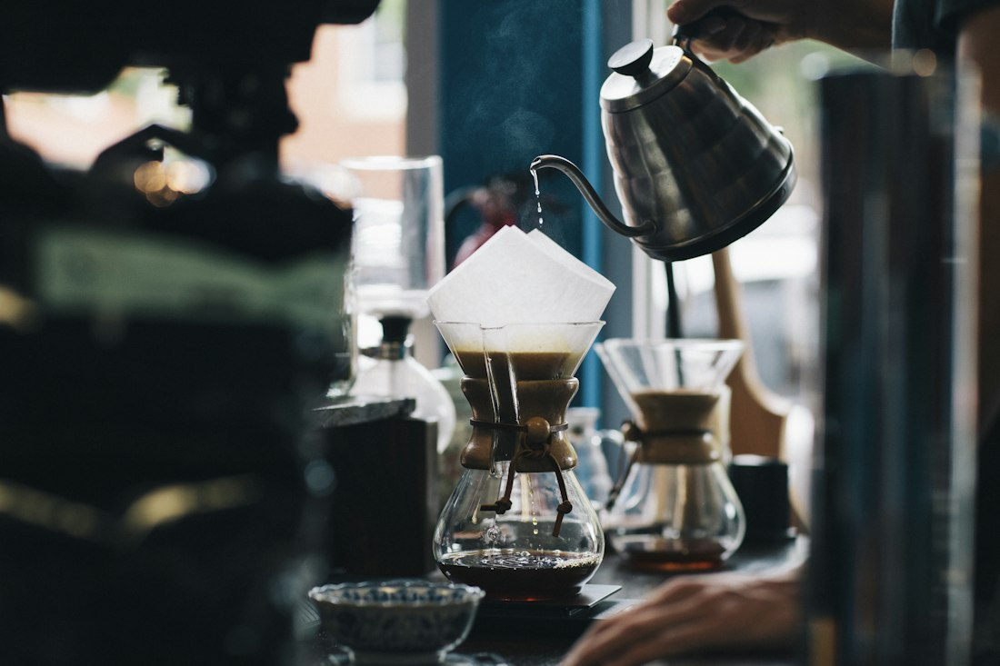
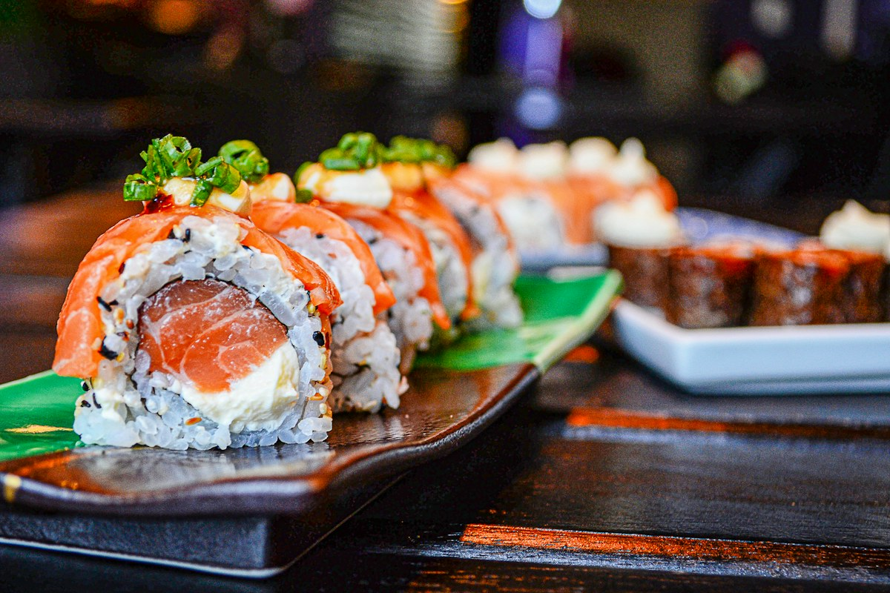
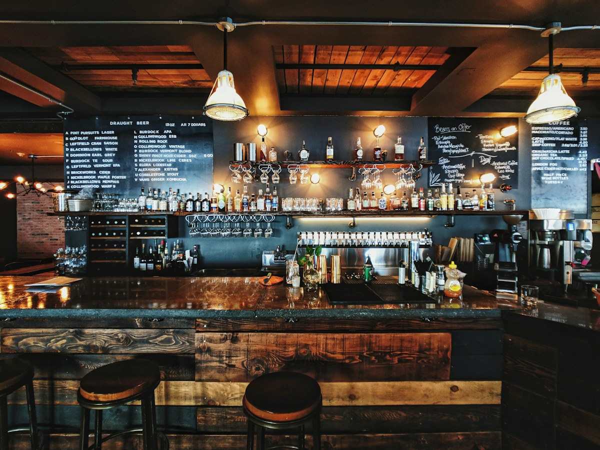
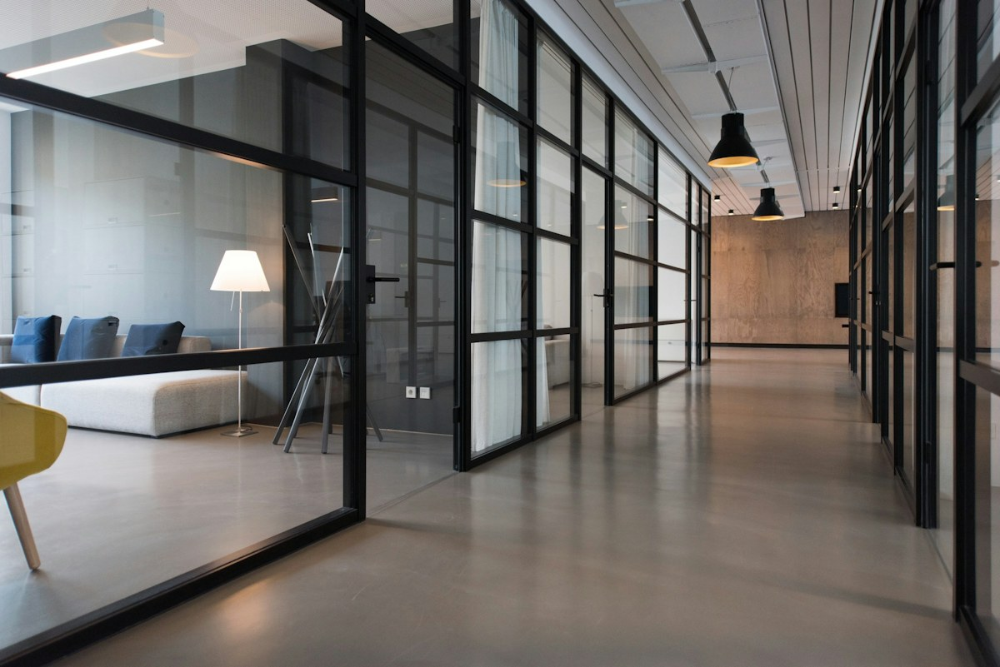
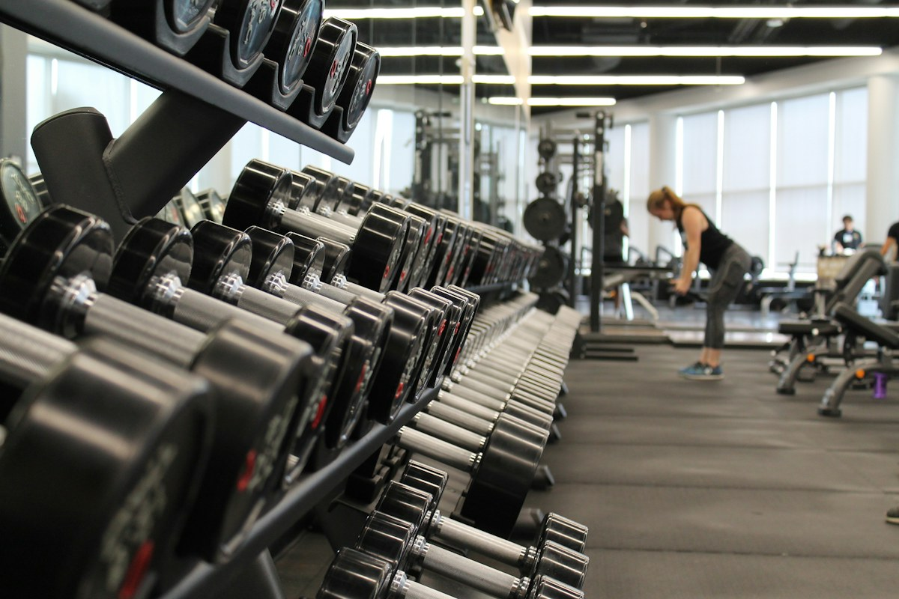

喫茶 こもれびABOUT MENU CONTACT
一杯と、ひと息。日々のすきまに、
やさしい時間。
やさしい時間。

KOMOREBI COFFEEあなたらしい、お店の顔を。
写真の見せ方も、文字の表情も。
13のデザインから、あなたの事業に合うひとつを。
13 DESIGNS

KOMOREBI COFFEE
RIKKA
NOCT / BAR & LOUNGE YOHAKU DESIGN OFFICE
YOHAKU DESIGN OFFICE
AOBA PARTNERS
TRAINING / CONDITIONING